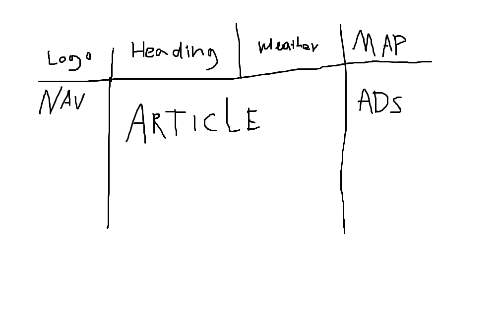

DENEWS
HELSINKI WEATHERWebbrapport
Vi vill göra en webbsida som imiterar en nyhetswebbsida men som inte är lika seriös.
Vår arbetsmetod gick mest ut på ”trial & error”.
Vi testade hur vi skulle få webbsidan att fungera, ofta blev den o användbar och vi måste gå tillbaka och börja om (ctrl-z).
Det är nog bäst att använda vår webbsida på en desktop. Vår målgrupp är de som kanske skulle vilja läsa nyheter men ha roligt på samma gång, både vuxna och ungdomar.
Vi ville att vår webbsida skulle likna en nyhetswebbsida så vi gjorde en ganska simple layout men ändå någorlunda snygg.
Vi ville ha logon som Alexander editerat ihop i högre vänstra hörnet och grid-layouten var lite svår att få att fungera som man ville,
men vi fick den nog till slut att fungera på något sätt.
Robert hittade på ett antal artiklar så att vi skulle få några nyheter på vår sida. Alexander fixade det mesta med funktionaliteten på webbsidan, infogade bland annat en karta och väderrapport. Det var ganska jobbigt att linka alla sidor till varandra och vi höll länge på med det. Layouten var också krånglig ibland, den betedde sig olika när vi infogade bilder och länkar, vi fick jobba hårt med att få layouten att vara konsekvent. Men till slut fick vi den att se ut som vi ville. Under kursens gång har vi lärt oss grunderna till html och css. Lite javascript har vi hållit med på i vårt projekt men inte har vi lika bra grunder i det som i html och css. Vi har lärt oss att använda oss av exempel och utveckla dessa exempel till något vi gillar. Med exemplen kommer man ihåg sedan själv hur man ska gå till väga när man kodar webbsidor.
